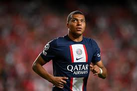
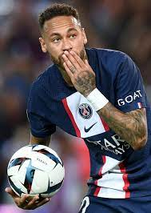

The 2022 FIFA World Cup is an international football tournament contested by the men's national teams of FIFA's member associations. The 22nd FIFA World Cup is taking place in Qatar from 20 November to 18 December 2022; it is the first World Cup to be held in the Arab world and Muslim world, and the second held entirely in Asia after the 2002 tournament in South Korea and Japan.[A] France are the defending champions, having defeated Croatia 4–2 in the 2018 final. At an estimated cost of over $220 billion,[2] it is the most expensive World Cup ever held; this figure is disputed by Qatari officials, including organising CEO Nasser Al Khater, who said the true cost is $8 billion,[3] and other figures relate to overall infrastructure development since the World Cup was awarded to Qatar in 2010. This tournament is set to be the last with 32 participating teams, with the field to increase to 48 teams for the 2026 edition. To avoid the extremes of Qatar's hot climate,[B] this World Cup is being held during November and December.[C] It is being played in a reduced timeframe of 29 days with 64 matches to be played in eight venues across five cities. The Qatar national football team entered the event automatically, their first World Cup, alongside 31 teams who were determined by the qualification process. Qatar lost all three group matches; they became the first hosts to lose every game, the earliest host nation eliminated,[6] and the second host (after South Africa in 2010) not to progress past the first stage.[7] In the first round of the tournament finals, the teams competed in eight round-robin groups of four teams for points, with the top two teams in each group proceeding. These 16 teams advanced to the knockout stage, where three rounds of play to decide which teams would participate in the final, which will be held on 18 December 2022 at Lusail Stadium, coinciding with Qatar's National Day.[8] The choice to host the World Cup in Qatar has been a source of controversy[D] due to Qatar's treatment of migrant workers, women, and its position on LGBT rights as well as Qatar's climate, lack of a strong football culture, scheduling changes, and allegations of bribery for hosting rights and wider FIFA corruption.
Lionel Andrés Messi, also known as Leo Messi, is an Argentine professional footballer who plays as a forward for Ligue 1 club Paris Saint-Germain and captains the Argentina national team.
Mbappé Lottin is a French professional footballer who plays as a forward for Ligue 1 club Paris Saint-Germain and the France national team. Considered one of the best players in the world, Mbappé is renowned for his dribbling abilities, exceptional speed, and finishing.
NeymarNeymar da Silva Santos Júnior (born 5 February 1992), known as Neymar, is a Brazilian professional footballer who plays as a forward for Ligue 1 club Paris ....

Mbappé Lottin The Kyle Walker and Kylian Mbappe battle has been hyped all week, ahead of the mouth-watering England versus France quarter-final clash at the 2022 World Cup. Although the top scorer in Qatar will give Walker a tough time, the Manchester City defender has named another player who has always given him problems. Read more: https://sportsbrief.com/football/29838-world-cup-2022-sadio-mane-toughest-player-walker-faced/.
The Top 4 Teams in the EPL 2022
1 1. Manchester City.
2 2. Arsenal.
3 3. Tottenham.
4 4. Chelsea.
The FIFA Men's World Ranking is a ranking system for men's national teams in association football, led by Brazil as of 2022. The teams of the men's member nations of FIFA, football's world governing body, are ranked based on their game results with the most successful teams being ranked highest.
7 is one of the most iconic shirt numbers in English football. From George Best to Kenny Dalglish to Eric Cantona to David Beckham… some of the most iconic attacking players England has ever seen have worn the number seven on their backs. And now also Joao Cancelo, a full-back.
The Philadelphia Eagles proved why they are the best team in the NFL and fantastic matchups between the Miami Dolphins vs San Francisco 49ers and Kansas City Chiefs vs Cincinnati Bengals provided season-defining results.